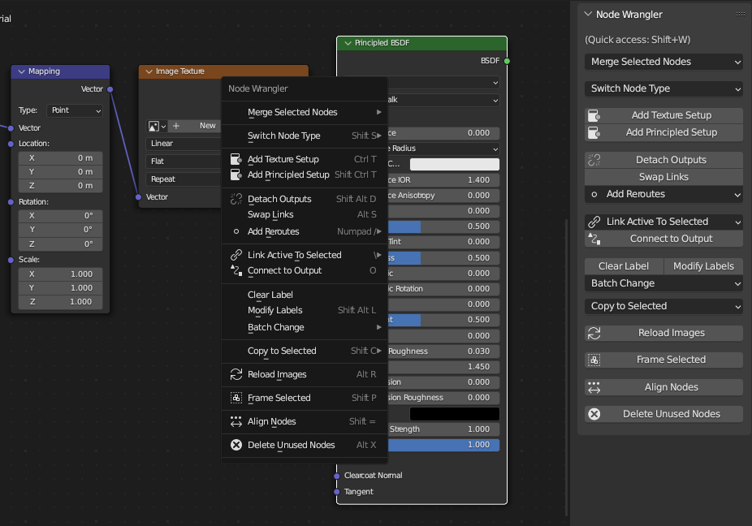
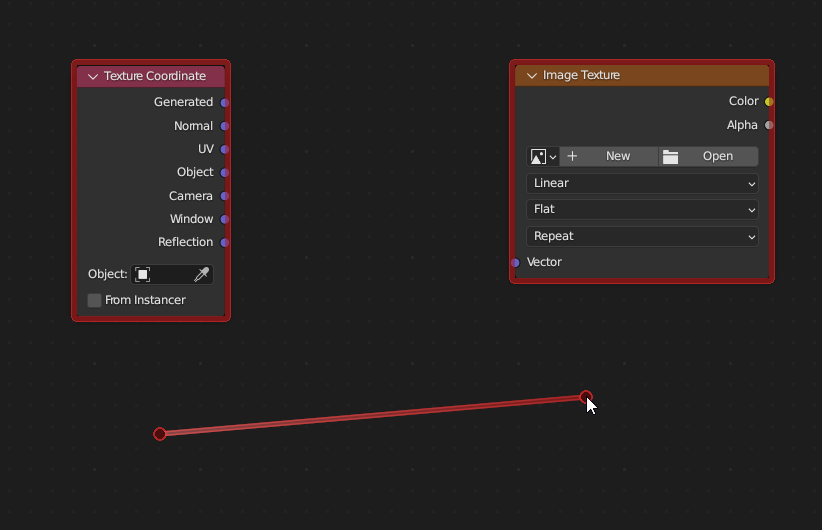
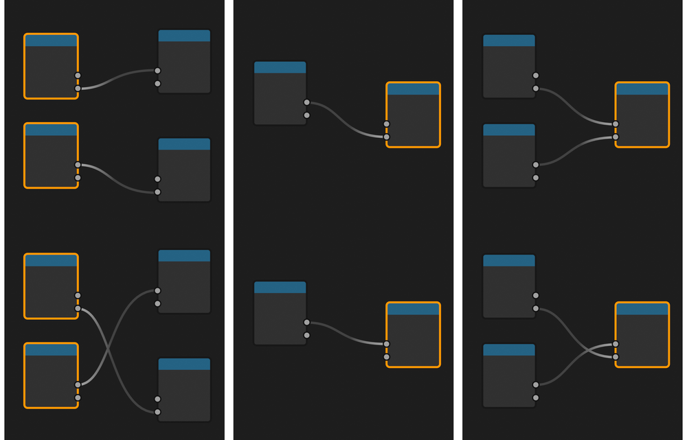
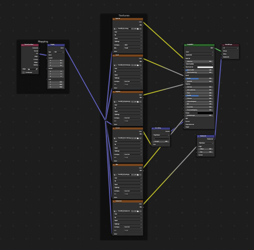

Node Wrangler¶
Node Wrangler cung cấp nhiều công cụ giúp bạn làm việc với node một cách nhanh chóng và hiệu quả.
Bật Add-on¶
Mở Blender và đến phần Add-ons của Preferences.
Tìm kiếm "Node Wrangler" và đánh dấu chọn ô Enable Add-on.
Cách dùng¶
Sử dụng panel trong Sidebar của node editor hoặc nhấn Shift-W để mở menu truy cập nhanh. Bạn cũng có thể tra danh sách phím tắt trong panel tùy chỉnh của add-on.

Bạn có thể truy cập hầu hết các chức năng từ panel sidebar hoặc menu truy cập nhanh.¶
Ghi chú
Trong khi nhiều chức năng của add-on này hoạt động trong tất cả các node editor được hỗ trợ (Compositor, Shader, Geometry Nodes và Texture Nodes), một số chức năng chỉ hoạt động trong node editor cụ thể, và một số chức năng hoạt động khác nhau tùy editor. Các chức năng chỉ hoạt động trong editor cụ thể được đánh dấu bằng nhãn (Compositor, Shader, Geometry Nodes, Texture Nodes). Các chức năng không có nhãn sẽ hoạt động trong mọi node editor.
Lazy Connect¶
Tham khảo
- Shortcut:
Alt-RMB-kéo, Shift-Alt-RMB-kéo
Kết nối hai node mà không cần nhấp vào socket. Chỉ cần kéo con trỏ từ node này sang node khác trong khi giữ Alt-RMB. Tính năng này sẽ chọn các node gần điểm bắt đầu và điểm kết thúc của thao tác kéo để kết nối, nên bạn thậm chí không phải nhấp vào node.

Việc chọn cũng có thể theo kiểu "lười".¶
Tính năng này cố kết nối các socket khớp nhất có thể, dựa trên tên, kiểu của chúng và việc chúng còn trống hay không.
Để kết nối chính xác hơn, bạn có thể dùng Shift-Alt-RMB. Phím tắt này mở các menu gồm input và output khả dụng trước khi kết nối, để bạn chọn chính xác socket cần nối. Điều này đặc biệt hữu ích khi làm việc với node tree lớn, vì bạn có thể nối kết mà không phải liên tục phóng to/thu nhỏ.
Lazy Mix¶
Tham khảo
- Shortcut:
Shift-Ctrl-RMB-kéo
Kết nối output của hai node vào một node dạng "mix" phù hợp. Đây là cách "lười" để chọn node và thực thi chức năng Mix từ Merge with Automatic Type Detection.
Merge¶
Tham khảo
- Menu:
Kết nối output của các node được chọn vào một node dạng "mix" (Mix, Math, Z-Combine, Alpha Over, Mix Shader, Add Shader, Join Geometry).
Ghi chú
Merge hiện không hỗ trợ output kiểu Integer, String hoặc Boolean từ Geometry Nodes.
Có cách merge tự động và thủ công. Cách tự động để add-on quyết định dùng node "mix" nào dựa trên kiểu của các output cần merge. Cách thủ công để bạn tự quyết định và ép kết nối ngay cả khi kiểu của output và node "mix" không tương thích.
Ghi chú
Nói chung, phần phím bổ trợ của phím tắt biểu thị loại node "mix" bạn muốn dùng (Ctrl để tự động phát hiện, Ctrl-Alt cho node Mix, và Shift-Ctrl cho node Math), phần còn lại biểu thị chế độ của node "mix" bạn muốn đặt (NumpadPlus để cộng, NumpadMinus để trừ, NumpadSlash để chia, và NumpadAsterisk để nhân).
Merge with Automatic Type Detection¶
Các hàm merge tự động xác định loại node "mix" cần dùng dựa trên kiểu của các output cần merge. Nếu có một output Color, nó sẽ dùng node Mix. Nó sẽ dùng node Math nếu cả hai output đều kiểu Value. Các node Add Shader, Mix Shader và Join Geometry cũng sẽ được dùng cho những trường hợp cụ thể.
- Modes
- Add Ctrl-=, Ctrl-NumpadPlus
Merge vào node Mix hoặc Math, rồi đặt blend mode hoặc phép toán math thành Add. Nếu các output là Shader, nó sẽ dùng node Add Shader thay thế.
- Multiply Ctrl-8, Ctrl-NumpadAsterisk
Merge vào node Mix hoặc Math, rồi đặt blend mode hoặc phép toán math thành Multiply.
- Subtract Ctrl-Minus, Ctrl-NumpadMinus
Merge vào node Mix hoặc Math, rồi đặt blend mode hoặc phép toán math thành Subtract.
- Divide Ctrl-Slash, Ctrl-NumpadSlash
Merge vào node Mix hoặc Math, rồi đặt blend mode hoặc phép toán math thành Divide.
- Mix Ctrl-0, Ctrl-Numpad0
Merge vào node Mix, rồi đặt blend mode thành Mix. Nếu các output là Shader, nó sẽ dùng node Mix Shader thay thế. Nếu các output là Geometry, nó sẽ dùng node Join Geometry.
Merge bằng Node Mix¶
Tham khảo
- Menu:
Dùng node Mix để merge, bất kể các node được chọn là gì. Bạn có thể chọn chế độ của node qua menu. Bạn có thể đặt nhanh một số phép toán bằng các phím tắt tương ứng.
Add: Ctrl-Alt-=, Ctrl-Alt-=
Subtract: Ctrl-Alt-Minus, Ctrl-Alt-NumpadMinus
Multiply: Ctrl-Alt-8, Ctrl-Alt-NumpadAsterisk
Divide: Ctrl-Alt-Slash, Ctrl-Alt-NumpadSlash
Merge bằng Node Math¶
Tham khảo
- Menu:
Dùng node Math để merge, bất kể các node được chọn là gì. Bạn có thể chọn chế độ của node qua menu. Bạn có thể đặt nhanh một số phép toán bằng các phím tắt tương ứng.
Add: Shift-Ctrl-=, Shift-Ctrl-=
Subtract: Shift-Ctrl-Minus, Shift-Ctrl-NumpadMinus
Multiply: Shift-Ctrl-8, Shift-Ctrl-NumpadAsterisk
Divide: Shift-Ctrl-Slash, Shift-Ctrl-NumpadSlash
Lớn hơn: Ctrl-Comma
Nhỏ hơn: Ctrl-Period
Merge bằng Node Z-Combine¶
Tham khảo
- Tương thích:
Compositor
- Menu:
- Shortcut:
Ctrl-NumpadPeriod
Dùng node Z-Combine để merge. Nếu có thể, các output Image và Z-Depth sẽ được liên kết. Nếu node editor hiện tại không phải Compositor, thao tác này sẽ thực thi chức năng Mix của merge tự động.
Merge bằng Node Alpha Over¶
Compositor
Tham khảo
- Menu:
- Shortcut:
Ctrl-Alt-0
Dùng node Alpha Over để merge. Nếu node editor hiện tại không phải Compositor, thao tác này sẽ thực thi chức năng Mix của merge tự động.
Thay đổi hàng loạt Blend Mode / Math Operation¶
Tham khảo
- Menu:
Thay đổi cùng lúc blend mode hoặc phép toán math của các node Mix và Math đang được chọn. Bạn có thể dùng Alt-Up hoặc Alt-Down để chuyển qua lại giữa các blend mode hoặc phép toán trước/sau. Bạn cũng có thể đặt nhanh một số phép toán bằng phím tắt tương ứng.
Add: Alt-=, Alt-=
Subtract: Alt-Minus, Alt-NumpadMinus
Multiply: Alt-8, Alt-NumpadAsterisk
Divide: Alt-Slash, Alt-NumpadSlash
Lớn hơn: Alt-Comma
Nhỏ hơn: Alt-Period
Thay đổi Mix Factor¶
Tham khảo
- Shortcut:
Alt-Left, Shift-Alt-Left, Alt-Right, Shift-Alt-Right, Shift-Ctrl-Alt-Left, Shift-Ctrl-Alt-0, Shift-Ctrl-Alt-Right, Shift-Ctrl-Alt-1
Thay đổi giá trị Factor của các node Mix và Mix Shader đang được chọn bằng phím tắt.
Tăng Factor thêm 0.1: Alt-Right
Giảm Factor đi 0.1: Alt-Left
Tăng Factor thêm 0.01: Shift-Alt-Right
Giảm Factor đi 0.01: Shift-Alt-Left
Đặt Factor thành 0.0: Shift-Ctrl-Alt-Left, Shift-Ctrl-Alt-0
Đặt Factor thành 1.0: Shift-Ctrl-Alt-Right, Shift-Ctrl-Alt-1
Xóa Node không dùng¶
Tham khảo
- Menu:
- Shortcut:
Alt-X
Dọn dẹp node tree của bạn. Xóa tất cả những node không đóng góp vào kết quả cuối cùng.
Hoán đổi Link¶
Tham khảo
- Menu:
- Shortcut:
Alt-S
Khi hai node được chọn, tính năng này hoán đổi link output của chúng cho nhau. Lưu ý rằng một số kết nối output có thể bị mất nếu hai node có số lượng output được kết nối khác nhau.
Khi một node được chọn: nếu node có một input được nối, tính năng này luân chuyển link qua các input socket khả dụng. Nếu node có hai input được nối, nó hoán đổi hai link đó. Nếu có nhiều hơn hai input được nối, nó hoán đổi hai input có kiểu khớp nhau (ví dụ hai input Color của node Mix).

Swap hoạt động khác nhau tùy thuộc vào các node được chọn và link của chúng.¶
Đặt lại Backdrop¶
Tham khảo
- Tương thích:
Compositor
- Menu:
- Shortcut:
Z
Đặt lại vị trí và tỉ lệ của backdrop.
Thêm Node Attribute¶
Tham khảo
- Tương thích:
Shader
- Menu:
Thêm một node Attribute với attribute được chọn.
Xem trước Output của Node¶
Tham khảo
- Tương thích:
Shader Geometry Nodes
- Shortcut:
Shift-Ctrl-LMB cho Shader, Shift-Alt-LMB cho Geometry Nodes
Kết nối một output của node được chọn vào output cuối cùng của node tree (Material Output hoặc World Output đối với Shader, Group Output cuối cùng đối với Geometry Nodes) để xem trước output của nó trong viewport. Bạn có thể lần lượt duyệt qua các output khả dụng bằng cách nhấp lại trong khi giữ các phím bổ trợ.
Xem thêm
Trong khi ở Shader, bất kỳ output nào cũng có thể nối vào output cuối cùng, thì ở Geometry Nodes, chỉ các output Geometry mới có thể nối vào output cuối cùng. Để xem trước các loại output khác trong Geometry Nodes, hãy dùng Viewer Node riêng của nó.
Xem thêm
Cũng hãy thử Connect to Output. Đây là chức năng tương tự nhưng có hành vi khác. Nó cũng hoạt động trong mọi node editor.
Join Nodes¶
Tham khảo
- Menu:
- Shortcut:
Shift-P
Xem Join in New Frame.
Tải lại Ảnh¶
Tham khảo
- Tương thích:
Compositor Shader Texture Nodes
- Menu:
- Shortcut:
Alt-R
Tải lại tất cả các ảnh được dùng trong node tree. Điều này cho phép bạn tải lại ảnh mà không cần dùng Image Editor.
Sao chép Cài đặt¶
Tham khảo
- Menu:
- Shortcut:
Shift-C
Sao chép cài đặt của node đang hoạt động sang tất cả node được chọn cùng kiểu.
Đặt lại Node¶
Tham khảo
- Menu:
- Shortcut:
Backspace
Trả lại cài đặt của các node được chọn về mặc định mà vẫn giữ nguyên các kết nối.
Sao chép Label¶
Tham khảo
- Menu:
- Shortcut:
Shift-V, Shift-C
Sao chép custom label sang tất cả node được chọn. Bạn có thể sao chép từ node đang hoạt động (Shift-V), từ các node được nối với node đã chọn, hoặc từ tên của các socket mà node đã chọn nối tới. Shift-C sẽ mở một submenu gồm mọi tùy chọn khả dụng.
Xóa Label¶
Tham khảo
- Menu:
- Shortcut:
Alt-L
Xóa custom label của các node được chọn và trả chúng về tên node mặc định.
Sửa Label¶
Tham khảo
- Menu:
- Shortcut:
Shift-Alt-L
Đổi tên hàng loạt custom label của các node được chọn. Bạn có thể thêm chữ vào đầu và cuối, cũng như thay thế một phần chữ.
Thêm Texture Setup¶
Tham khảo
- Tương thích:
Shader
- Menu:
- Shortcut:
Ctrl-T
Thêm một bộ setup gồm texture node, Texture Coordinate và Mapping node vào bất kỳ shader node nào. Nếu bạn chọn một texture node, nó sẽ chỉ thêm các node Texture Coordinate và Mapping. Đối với background shader, nó sẽ thêm một node Environment Texture.
Thêm Principled Texture Setup¶
Shader
Tham khảo
- Tương thích:
Shader
- Menu:
- Shortcut:
Shift-Ctrl-T
Thêm một principled texture setup từ các file texture được chọn. Chọn một node Principled BSDF, chọn Add Principled Setup từ menu truy cập nhanh (hoặc nhấn Shift-Ctrl-T), rồi chọn các file texture. Tính năng này tự động hóa quá trình thêm node Image Texture, nạp ảnh, chọn Color Space phù hợp, và kết nối output của chúng vào node Principled BSDF.
Nó nhận diện loại texture bằng cách xem tên file của chúng. Bạn có thể chỉnh sửa các thẻ dùng cho quá trình khớp này trong tùy chỉnh của add-on.

Thiết lập những texture này có thể tốn hàng chục lần nhấp, kể cả với các công cụ khác của Node Wrangler. Với Principled Texture Setup, bạn có thể rút xuống còn vài lần nhấp.¶
Thêm Reroute vào Output¶
Tham khảo
- Menu:
- Shortcut:
Slash
Thêm node reroute vào từng output của các node được chọn.
Link Active to Selected¶
Tham khảo
- Menu:
- Shortcut:
Backslash
Nối node đang hoạt động với các node được chọn dựa trên nhiều tiêu chí khác nhau.
- Đến tất cả node được chọn
Nối node đang hoạt động với tất cả node được chọn. (K) Bạn có thể ép thay thế các link hiện có. (Shift-K)
- Dùng Tên/Label của Node
Chỉ nối với các node được chọn có cùng label với node đang hoạt động. (') Bạn có thể ép thay thế các link hiện có. (Shift-')
- Dùng Tên các Output
Chỉ nối khi tên của các output khớp với tên hoặc label của các node được chọn. (;) Bạn có thể ép thay thế các link hiện có. (Shift-;) Điều này tiện để thay thế nguồn cùng lúc. (Ví dụ: nối các output từ Render Layer vào ảnh (EXR đa lớp) trong Compositor.)
Căn chỉnh Node¶
Tham khảo
- Menu:
- Shortcut:
Shift-=
Căn chỉnh các node được chọn theo chiều ngang hoặc dọc. Hiệu ứng tương tự như co giãn node trên một trục (S X 0 hoặc S Y 0), nhưng nó đặt các node cách đều nhau.
Đưa Node về giữa¶
Tham khảo
- Menu:
Di chuyển các node được chọn vào giữa node editor.
Chọn trong Frame (Cha/Con)¶
] -- Chọn tất cả node con trực tiếp của frame được chọn.
[ -- Chọn node frame cha trực tiếp của các node được chọn.
Tách Output¶
Tham khảo
- Menu:
- Shortcut:
Shift-Alt-D
Tách các output của node được chọn trong khi giữ nguyên các input đã nối.
Thêm Nhiều Ảnh¶
Tham khảo
- Tương thích:
Compositor Shader
- Menu:
cho Compositor, hoặc cho Shader
Chọn nhiều ảnh và thêm một node cho mỗi ảnh. (Hữu ích khi import nhiều render pass hoặc bản render để xếp chồng ảnh.)
Thêm Image Sequence¶
Tham khảo
- Tương thích:
Compositor Shader
- Menu:
cho Compositor, hoặc cho Shader
Thêm một Image Sequence bằng cách chỉ chọn một ảnh từ chuỗi các file ảnh. Tính năng này sẽ tự động phát hiện độ dài của chuỗi và thiết lập node phù hợp.
- Relative Path
Đặt đường dẫn file tương đối so với file .blend đang mở. Xem Đường dẫn Tương đối.
- Start Frame
Frame bắt đầu toàn cục của phim/chuỗi ảnh, giả định ảnh đầu tiên có số #1.